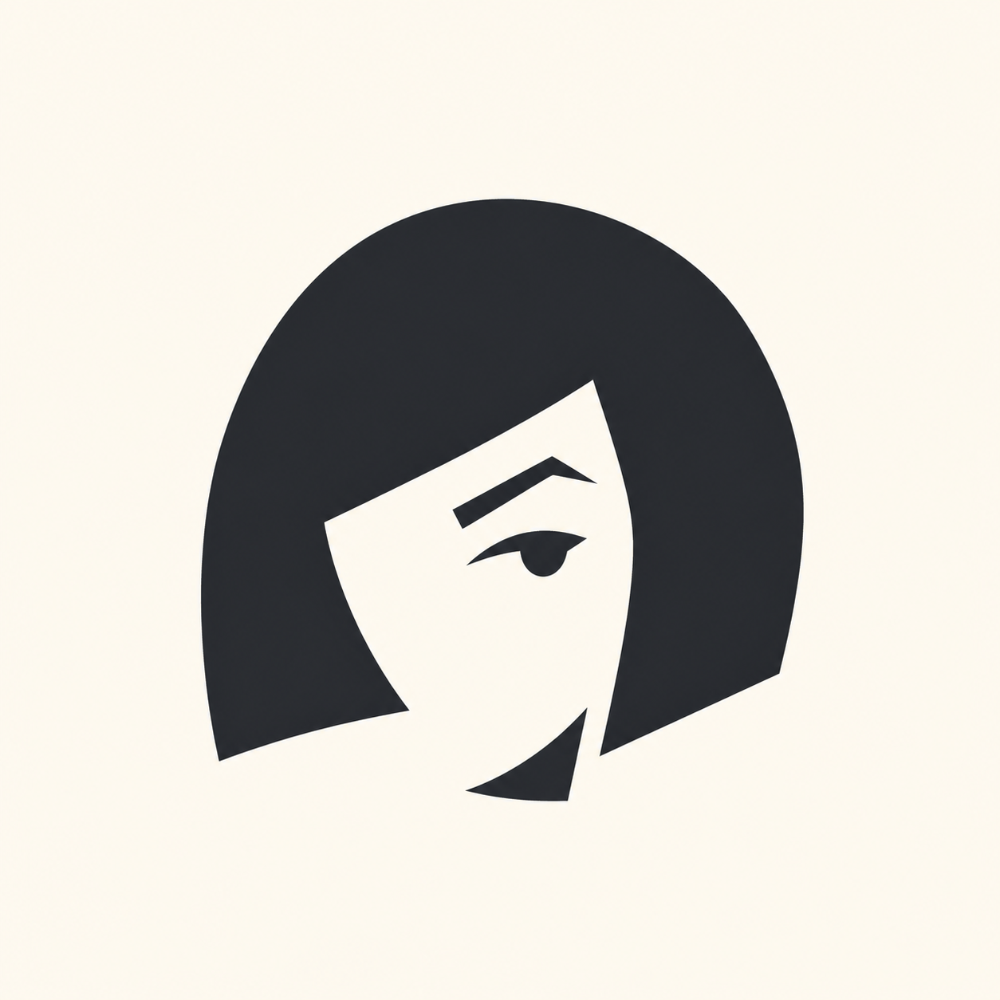
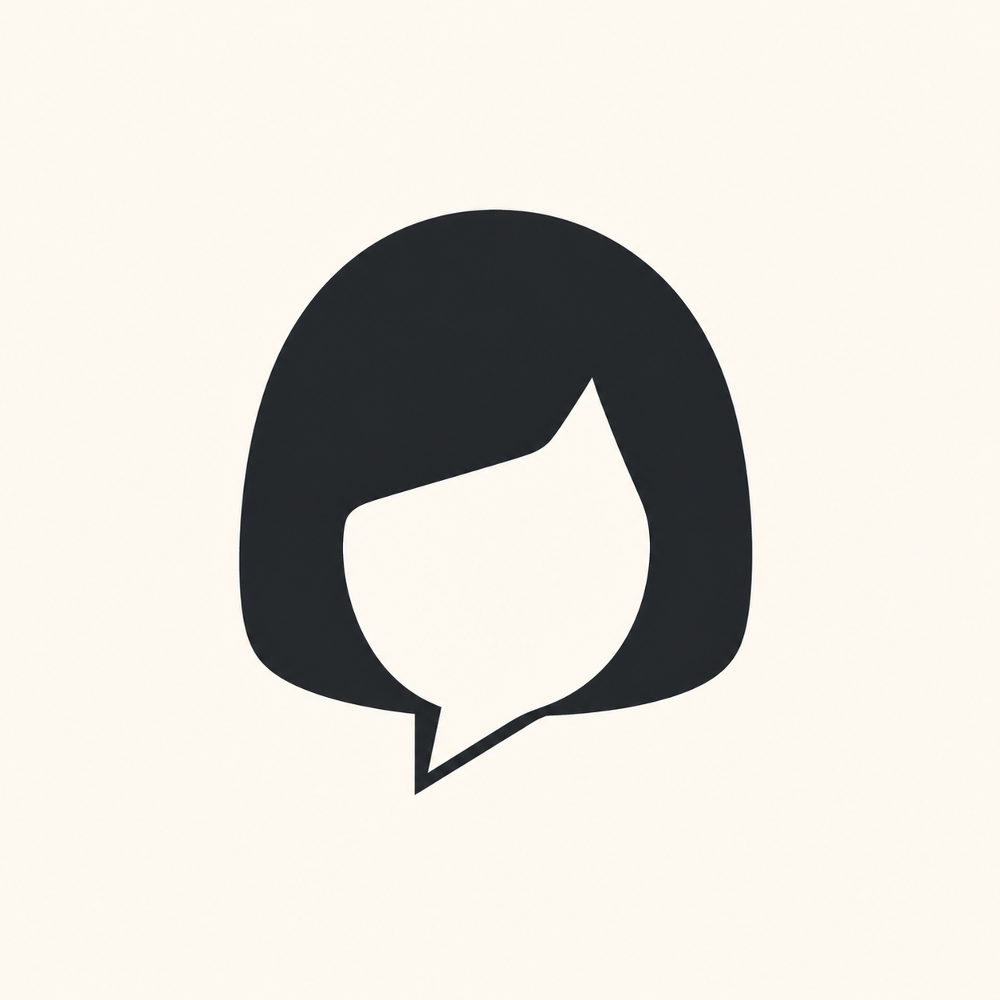
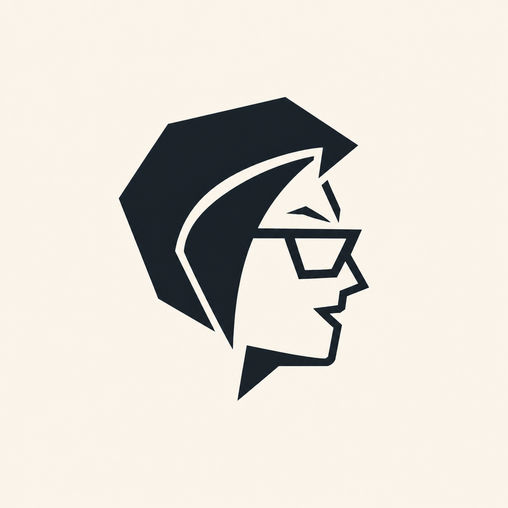
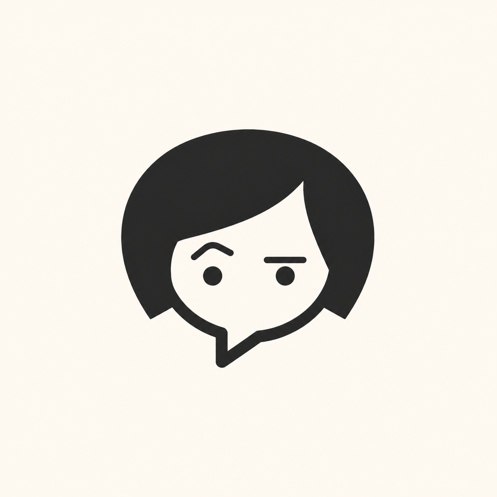
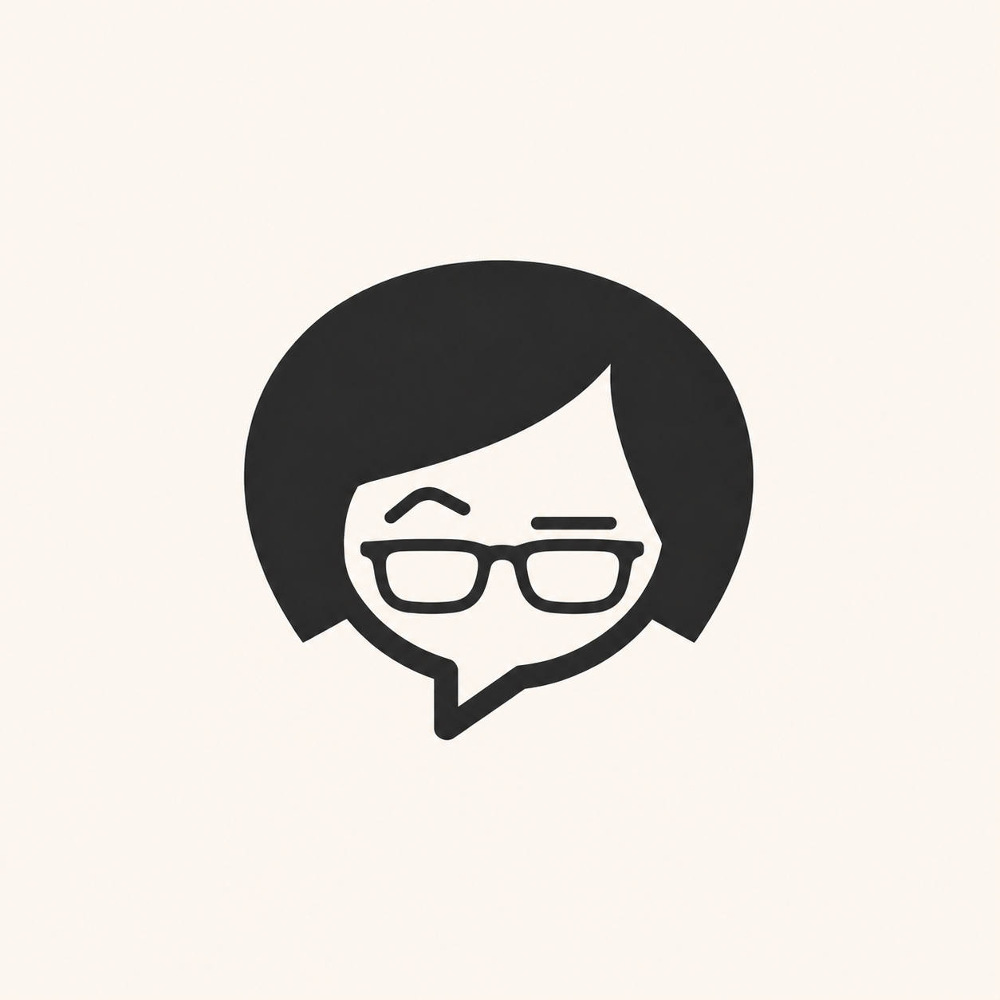
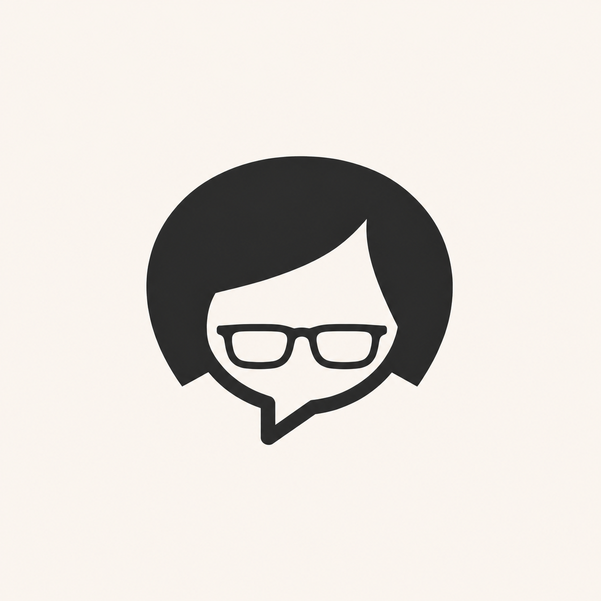

Launcher preview
01 — The raised brow
Most characterful. Reads immediately as a person, but risks feeling too literal at small sizes.
Karen identity study
Six image-model explorations for replacing the microphone launcher. These are form studies, not final assets: the selected direction should be redrawn as a crisp SVG and tested at 16, 24, and 56 pixels before shipping.
The strongest candidates imply a personality without turning Karen into a literal or hostile caricature.

Most characterful. Reads immediately as a person, but risks feeling too literal at small sizes.

Best product mark. Feedback and personality collapse into one simple, scalable silhouette.

Distinctive and assertive. It carries the joke hardest, but has too much detail for a tiny control.

Friendly and legible. The safest direction, though less ownable than the bob bubble.

Keeps both eyebrows and the friendly speech-bubble silhouette while adding a more recognizable, opinionated signature.

The cleanest version. It keeps the recognizable silhouette while staying calm and legible at launcher size.
Three coherent directions to align on before production styling. Direction A is my recommendation.
Direct microcopy, never mean. Instrument Sans feels human and precise without looking like generic AI software.
Spline Sans is warmer and rounder. The petrol-and-coral palette feels capable with a small spark of humor.
A display serif used only for rare headings, paired with a sans for controls. Memorable, but easiest to overdo.